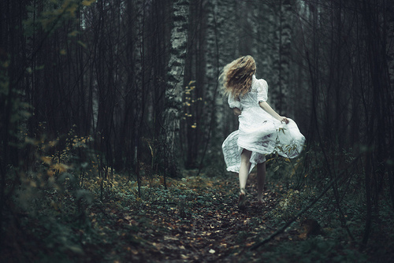

Oops! Ele correu tão depressa que o perdi de vista. O que eu sei é que agora estou perdida no meio da floresta. Sei que ele foi por aqui... hum... mas por onde?
De um lado, tem uma caverna. De outro, segue uma pequena trilha. Não sei qual caminho devo tomar. E, pra complicar, o unicórnio nem deixou pegadas, nem um rastro.
Por onde será que ele entrou?